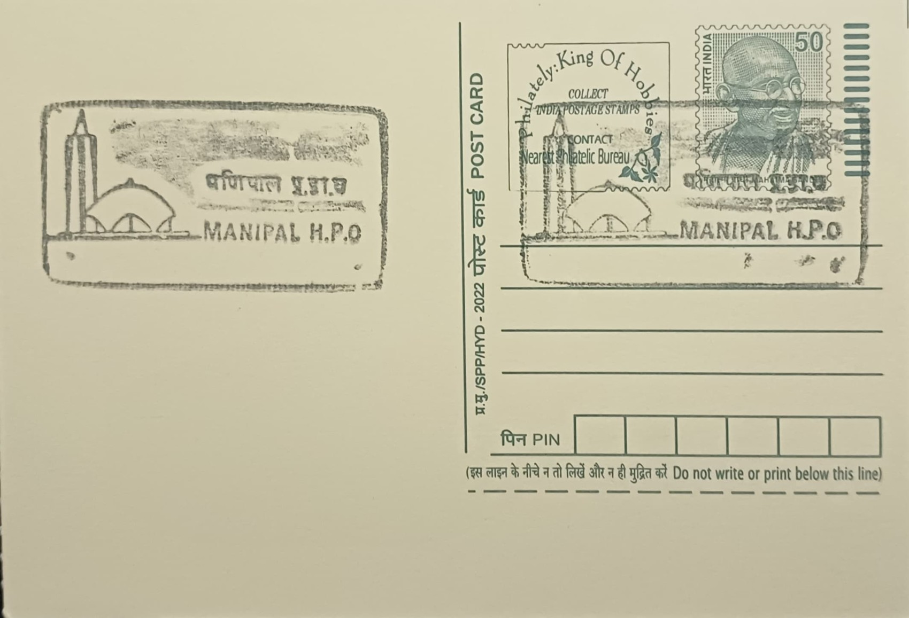

Sri Venugopala Swamy Temple
ಶ್ರೀ ವೇಣುಗೋಪಾಲ ಸ್ವಾಮಿ ದೇವಸ್ಥಾನ


Sri Venugopala Swamy Temple takes its name from Venugopala, literally the "cowherd with the flute," one of the classical iconographic forms of Krishna shown playing the flute amid grazing cattle. The name and the imagery draw directly on the Bhagavata Purana's account of Krishna's youth in Vrindavan, where he is depicted as a pastoral figure beloved by the gopis rather than the statesman-warrior of the Mahabharata. The temple stands within Eshwar Nagar on the campus of the Manipal Institute of Technology (MIT), placing it at the heart of the educational township that grew up around Udupi's older Krishna Matha tradition, and its dedication reflects the same Vaishnavite devotional current that Madhvacharya established in the district in the thirteenth century.
As a campus temple rather than a pilgrimage centre of regional stature, Sri Venugopala Swamy Temple's significance lies chiefly in its role within the Manipal institutional ecosystem founded by Dr. Tonse Madhav Ananth (T.M.A.) Pai, who established Kasturba Medical College in 1953 and the Manipal Institute of Technology five years later in 1957-58. The shrine functions as a devotional focal point for the thousands of students, faculty and residents who live and study in the surrounding university town, giving the temple an institutional character distinct from Udupi's more historic Krishna-worship sites even as it draws on the same theological lineage and Vaishnavite practice.
The temple's main sanctum enshrines an image of Venugopala, Krishna with his flute, with reviewers and visitors noting the depiction of the deity accompanied by a cow as a particularly striking element of the murti. Flanking the principal shrine are subsidiary shrines to Hanuman and Ganapathi, a layout common to South Indian temple compounds, set within a landscaped, tree-shaded compound that gives the complex a markedly tranquil character compared with the denser urban temple precincts of old Udupi town. The complex is maintained as part of the broader Manipal campus grounds and keeps regular public hours through the week.
The temple's most distinctive and frequently remarked feature is its architecture, which departs from conventional Dravidian temple design: rather than a standard gopuram, the structure pairs a dome reminiscent of a mosque with a tower recalling a church bell-tower, a combination widely interpreted locally as a deliberate gesture toward religious harmony within the cosmopolitan, multi-faith student community that Manipal has long attracted. This hybridised silhouette, set beside a conventionally ornamented sanctum carrying carved depictions of Hindu deities, makes the building visually distinct from the temples of the Udupi Krishna Matha tradition described in the seed account, even as its ritual content remains conventionally Vaishnavite.
Online visitor reviews place the temple's rating at roughly 4.6 out of 5 across several hundred entries, reflecting its standing as a well-kept, actively used shrine rather than a monument preserved mainly for its history. It continues to draw devotees particularly around Krishna Janmashtami, in keeping with the wider Udupi region's festival calendar, while day-to-day it functions chiefly as a quiet retreat for MIT students and staff seeking a short break from the academic routine of the campus. Administered as part of the Manipal campus rather than by a separate temple trust, Sri Venugopala Swamy Temple is best understood today as a working devotional space woven into university life rather than a freestanding pilgrimage destination.
| Date of Introduction | December 4, 1988 |
|---|---|
| Address | Senior Postmaster, |
| Manipal HO, | |
| Udupi (dt.), Karnataka - 576104. |